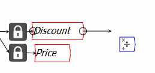
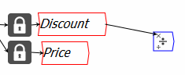
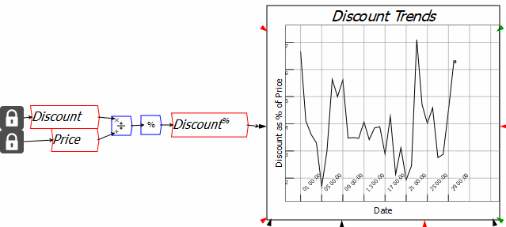
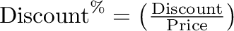
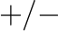
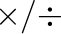

A wire represents the flow of values from one operation to the next. To add a wire to the canvas, click on the output port of an operator or variable (on the right hand side of an icon in its initial unrotated orientation), and then drag it towards an input port (on the left hand side of an unrotated icon); an arrow will be drawn out of the port. The next figure shows an arrow being drawn out of an output port and dragged towards an input port on a divide block.

When the mouse is released, Ravel searches for a nearby input port and attaches the wire there.

When the other variable is wired to the divide operator, the output can be further processed and allocated to another variable for further analysis or display.

The Equation Tab and LaTeX export shows the equation generated by this wiring:

.You can't connect an operator to itself (that would be a loop, which is not allowed, unless passing through an integral), nor in general can an input port have more than one wire attached—the exceptions are mathematical operators such as

and
(and similarly max/min), where the multiple wires are summed or multiplied, respectively.